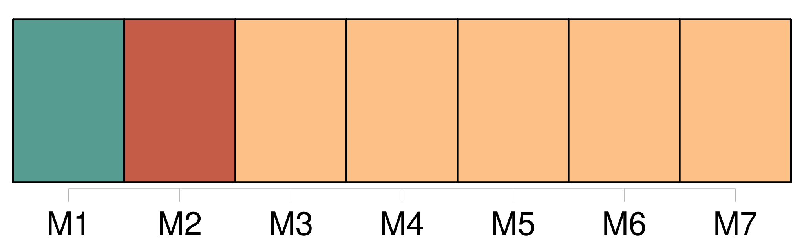
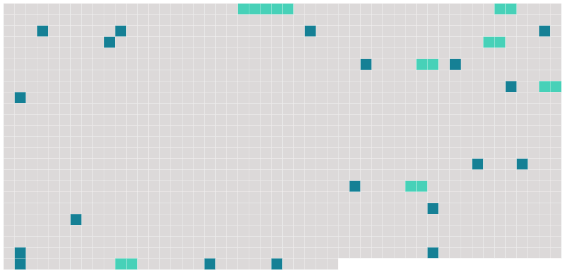

Longueur nb maillons : 26 mentions |
 |
Une main fine avait tracé sur une face de la feuille pliée à la mode ancienne : « A monsieur, [monsieur l'abbé d'Argencé] [1 phrases]
Et voici la quatrième : [2 phrases] [Vous] dirai -je lequel?? [1 phrases] [Vous] me gronderiez.
Puis, quand j'ai lu, je songe, et je veux [vous] dire à quoi.
« On a mis derrière ma tête des oreillers qui me tiennent assise, et je [vous] écris sur ce mignon pupitre que j'ai reçu de [vous] [1 phrases] « Le lit, [mon ami] , c'est toute notre vie. [4 phrases] « [Vous] connaissez mon lit, [mon ami] [Vous] ne vous figurerez jamais que de choses j'y ai découvertes depuis trois jours, et comme je l'aime davantage. [4 phrases] [Songez] -y, [mon ami] ; [songez] à tout, revoyez des vies entières entre ces quatre colonnes, sous ce tapis à personnages tendu sur nos têtes, qui a regardé tant de choses. [10 phrases]
« Vous rappelez [-vous] ces vers que [vous] m'avez lus, l'autre année, dans quelque poète antique, je ne sais lequel, peut-être le doux Ronsard? [1 phrases] « Et [songez] à la mort, [mon ami] , à tous ceux qui ont exhalé vers Dieu leur dernier souffle en ce lit. [1 phrases]
Que de cris, que d'angoisses, de souffrances, de désespoirs épouvantables, de gémissements d'agonie, de bras tendus vers les choses passées, d'appels aux bonheurs terminés à jamais ; que de convulsions, de râles, de grimaces, de bouches tordues, d'yeux retournés, dans ce lit, où je [vous] écris, depuis trois siècles qu'il prête aux hommes son abri! « Le lit, [songez] -y, c'est le symbole de la vie ; je me suis aperçue de cela depuis trois jours. [8 phrases] mais je n'ai le temps de [vous] les marquer, et puis me les rappellerais -je toutes?? [1 phrases]
« [Venez] me voir demain à trois heures ; peut-être serai -je mieux et [vous] le pourrai -je montrer. « Adieu, [mon ami] ; voici mes mains pour que [vous] les baisiez, et je [vous] tends aussi mes lèvres. |
 |
Il est possible de télécharger la ressource sur la page Ortolang |
Si vous avez des questions ou vous voyez des erreurs, merci d'envoyer un mail à silvia.federzoni89@gmail.com |